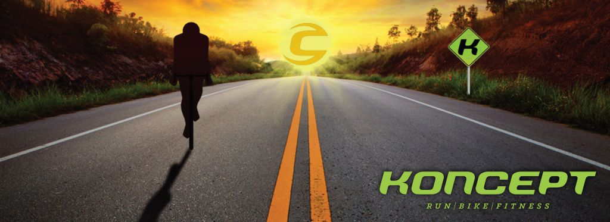
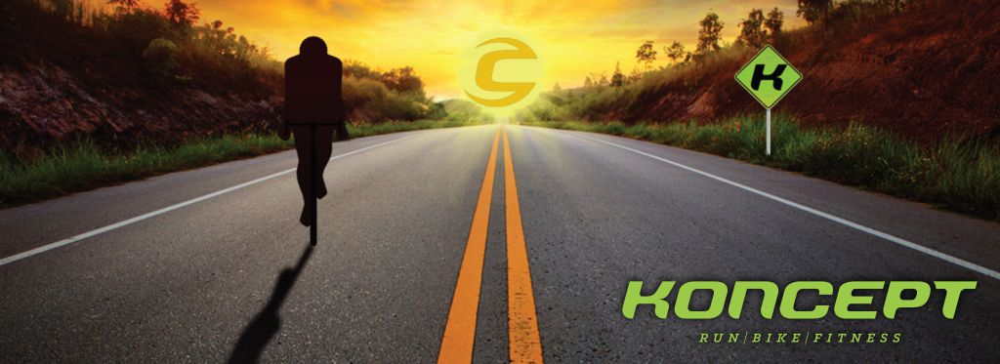

Se você curte velocidade, essa é a bike certa pra você. As bikes de speed são leves, com pneus finos e aceleram muito rápido. Por isso, são recomendadas para ciclistas mais experientes. Elas são ideais para uso fora do perímetro urbano, onde podem desenvolver a sua melhor característica: a velocidade!
Lama, aventura e diversão. Se essa é a sua vibe, as mountain bikes foram feitas pra você! Elas andam em qualquer terreno, com aros entre 24 a 29 polegadas, são perfeitas para enfrentar quaisquer obstáculos. Existem vários modelos no mercado, desde as mais simples até modelos mais sofisticados, para uso profissional. Curte fazer trilhas? Então se junte a galera do mountain bike!
Nossa cidade é linda. Cada parque, praça ou avenida merece nosso olhar atento. Para ver a cidade de outro ponto de vista, nada melhor do que faze-lo de bike! Sem pressa nem correria, a bike de passeio é ideal para andar em grupos, com o objetivo de desfrutar o que cada cidade tem de melhor e, logicamente, a companhia dos amigos e familiares.